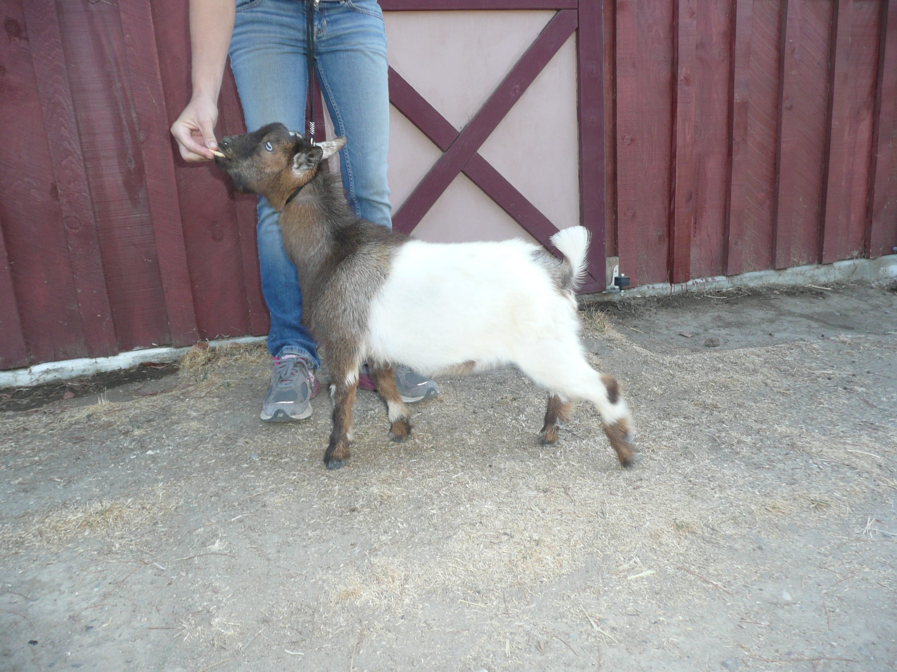

BUCKS
We do offer stud service at a rate of $75 - $100 per doe bred. The breeding fee will cover two visits if needed. It is important that your doe be up on her minerals when you come to have her serviced or she may not settle.
We do not offer outside boarding service due to health concerns. Please keep track of when your doe is coming into heat so you can bring her at the appropriate time.
Does brought for breeding must have proof of a recent (within 30 days) negative CAE test.
Please call and give us a heads up when you think you might be wanting to bring your doe. We will do our best to accommodate.
| Buck | Photos |
|---|---|
|
DOB 03/13/2016 *B Sire: Castle Rock Chicago Peace +B
Dam: SGCH Castle Rock Moon Beam 1*M VEEE90
Sire's Sire: Copper Penny ROF Calico Jack
Sire's Dam: GCH-ARMCH CRF Castle Rock Tuscan Sun 1*M *D VEEE90
Dam's Sire: SG Castle Rock Cleveland Sage +*B *S 2015 & 2016 Elite Buck List
Dam's Dam: CRF Castle Rock Moon River +EEE88
SSS: Twin Creeks FAX Ring Of Fire VVE88
SDD: TX Twincreeks WOF Sunsprite VVVV87
DSD: SGCH-ARMCH CRF Castle Rock Alum Root 3*D VEEE91
DDD: MCH-SGCH Castle Rock Once Ina Blue Moon 2*D VVEV86
SSSS: Twin Creeks WB Shadowfax EEE91
SSSD: Twin Creeks Midsummernitedream EEEE91
SDDS: GCH Pecanhollow Willy’s Dance Fever EEE91 (polled)
SDDD: SGCH Goodwood Good Day Sunshine EEEV90
DSSD: SGCH Algedi Farm H Purple Rain VEEV90 Rocket is a striking Red with blue eyes. Everyone comments on what a handsome man he is. He has a strong front end assembly, long body and great depth of barrel. He shows great strength when on the move. Rocket is very sweet. When it comes to taking care of business he knows what he needs to do. Rockets babies have all been very long with a great top-line. |


|
|
DOB 02/09/2016 Sire: Farm Oldesouth Man N Command *B
Dam: Kickapoo Creek SB Oreo Sire's Sire: Farm Oldesouth Cherokee Paint *B
Sire's Dam: SGCH Rosasharn GX Udiamond 3*M VVEE90
Dam's Sire: AGS DC Miniatures SJ Smokeysbandit Dam's Dam: Dream-Weaver DMC Melody SSS: Oldesouth Blue Alexa EEEE92
SDD: Rosasharn’s TL Galaxy VEE90
DSD: SG Rosasharn’s Uni EEEV90
DDD: SG Rosasharn’s Eclipse EEEV91 Magic is our black stallion. He actually looks like he has a stallion’s mane. Magic is a real sweet guy. I love how he widens out in the rump. Boy does he make beautiful babies. |


|
|
DOB 01/18/2017 Sire: Castle Rock Moon Rock *B
Dam: Castle Rock Corona +EVV87
Sire's Sire: Castle Rock Chicago Peace +B
Sire's Dam: SGCH Castle Rock Moon Beam VEEE90
Dam's Sire: Camanna Music Man Dam's Dam: CRF Castle Rock Lunar Eclipse VEEV91
SSD: GCH-ARMCH CRF Castle Rock Tuscan Sun 1*M *D VEEE90
SDS: SG Castle Rock Cleveland Sage +*B *S 2015 & 2016 Elite Buck List
SDD: CRF Castle Rock Moon River +EEE88
SDSD: SGCH-ARMCH CRF Castle Rock Alum Root 3*D VEEE91 Cowboy is medium red with a white spot on his belly, white poll and brown/gold eyes. He has a very long neck and body, tight in the withers with a nice top line and flat boned. Our 2017 Linear Appraiser said he is a keeper. Cowboy has a very sweet disposition. He, like all the babies born here at 8 Gables was bottle raised and is very easy to handle. |
|
|
DOB 01/19/2017 Sire: Castle Rock Moon Rock *B
Dam: 3G Family Farm HM Zinfandel 3*M
Sire's Sire: Castle Rock Chicago Peace +B
Sire's Dam: SGCH Castle Rock Moon Beam VEEE90
Dam's Sire: CRF Castle Rock Harvest Moon +B
Dam's Dam: 3G Family Farm BS Love Bunny 2*M
SSD: GCH-ARMCH CRF Castle Rock Tuscan Sun 1*M *D VEEE90
SDS: SG Castle Rock Cleveland Sage +*B *S 2015 & 2016 Elite Buck List
SDD: CRF Castle Rock Moon River +EEE88
SDSD: SGCH-ARMCH CRF Castle Rock Alum Root 3*D VEEE91
DSD: MCH-SGCH Castle Rock Once Ina Blue Moon 2*D VVEV86 Rio is very dairy with his long neck and body. He is tight in the withers and has good spring of rib. Rio is angular and quite the handsome guy. He is long like his Sire Castle Rock Moon Rock, but I think he might be a little wider in the rump. Another blue eyed Casanova. |
|
|
DOB 03/10/2017 Sire: Little Prairie Maverick Dam: 8Gables Luseel Ball Sire's Sire: Desertnanny Y Chieftain *B
Sire's Dam: Dream-Weaver SS Izzabella +VE+83
Dam's Sire: Castle Rock Moon Rock *B
Dam's Dam: 3G Family Farm P Lovebugs Oreo 2*M
SSD: Desertnanny BR Floribunda 4*M VEEV88
DSS: Castle Rock Chicago Peace +B
DSD: SGCH Castle Rock Moon Beam VEEE90
DDS: Copper Penny HH Pollinator VVV87
DDD AGS SLY Farms S Lovebug 1*M VEEV88
DSSD: GCH-ARMCH CRF Castle Rock Tuscan Sun 1*M *D VEEE90
DSDS: SG Castle Rock Cleveland Sage +*B *S 2015 & 2016 Elite Buck List
(Castle Rock Tanzanite *S x SGCH-ARMCH CRF Castle Rock Alum Root 3*D VEEE91)DSDD: CRF Castle Rock Moon River +EEE88 Jon Wayne’s Sire was one of our favorite bucks. We were so saddened when we lost him in 2016. We were so excited when Jon Wayne was born. There was no question about it he was staying at 8 Gables Ranch and taking his dad’s place. Occasionally, we slip up and call him Mavy. He is quite the sweetheart. He thinks he is a lap puppy. Jon Wayne is brown with a large white belly band and blue eyes. He is very wide in the rump and escutcheon. |
 |
|
DOB 03/10/2017 Sire: Castle Rock Moon Boots Dam: SGCH Castle Rock Breakin My Heart 6*M VEEE90
Sire's Sire: Caprine Acres HS Cooper
(CH Caprine Acres SG Hott Shott 91EEE x Kaapio Acres AD Carina EEEE92)
Sire's Dam: CH CRF Castle Rock Moon River +EEE88
Dam's Sire: SG Castle Rock Cleveland Sage +*B *S 2015 & 2016 Elite Buck List
Dam's Dam: Algedi Farm S Honey Heart VVEV87
SSS: CH Caprine Acres SG Hott Shott EEE91
SSD: Kaapio Acres AD Carina EEEE92
SDD: MCH-SGCH Castle Rock Once Ina Blue Moon 2*D VVEV86
DSD: SGCH-ARMCH CRF Castle Rock Alum Root 3*D VEEE91
DDD SGCH Rosasharn’s UMT Tupelo Honey 1*M VEEV88
SSSD: CH Kaapio Acres AD Hot Tamale VEVE89
DSSD: SGCH Algedi Farm H Purple Rain VEEV90
DDDD: SG Rosasharn’s Buckwheat Honey EEEE91 I think Iheart might be the sweetest little goat I have ever brought back to the ranch. He has such a beautiful disposition. Generally re-homing is stressful for a goat. Not Iheart. I put him on a lead and set him down on the ground and he didn’t move from my side. He only took a step when I took a step. He is quite the snuggler. He never even knew there was a lead on him. He has been very content ever since he arrived. He is even happier now that he has been put to work. |


|
|
DOB 02/02/2017 Sire: Caprine Acres HS Cooper Dam: Castle Rock Sunsplash 3*M VEEV88 (polled)
Sire's Sire: CH Caprine Acres SG Hott Shott EEE91
Sire's Dam: Kaapio Acres AD Carina EEEE92
Dam's Sire: Castle Rock Black Oak *B *S
Dam's Dam: GCH CRF Castle Rock Sun Saphire 2*M VVEV88 (polled)
SSS: GCH Bruch Creek Smokin Gun SSD: CH Kaapio Acres AD Hot Tamale VEVE89
DSD: GCH Castle Rock Sarafina EEEE92
DDD TX Twincreeks WOF Sunsprite VVVV87
SSDD: CH Kaapio Acres Hot Cholula EEEE91
SDSS: Rosasharn CH Uproar VEE87
SDDS: Kaapio Acres RA Rocket Man EEE91
DSSD: SGCH CRF Castle Rock Penny Wise VVEE90
DSDD: GCH Esperanza WS Sara VVEV87
DDSD: MCH-SGCH Castle Rock Once Ina Blue Moon 2*D VVEV86
DDDS: Pecanhollow Willy’s Dance Fever EEE91 (polled)
DDDD: SGCH Goodwood Good Day Sunshine EEEV90 |
|
CONTACT US
Barbara A Tucker
8 Gables
7280 Lauras Lane
Vacaville, CA 95688
925-250-6188
8gablesranch@gmail.com
8 Gables
7280 Lauras Lane
Vacaville, CA 95688
925-250-6188
8gablesranch@gmail.com